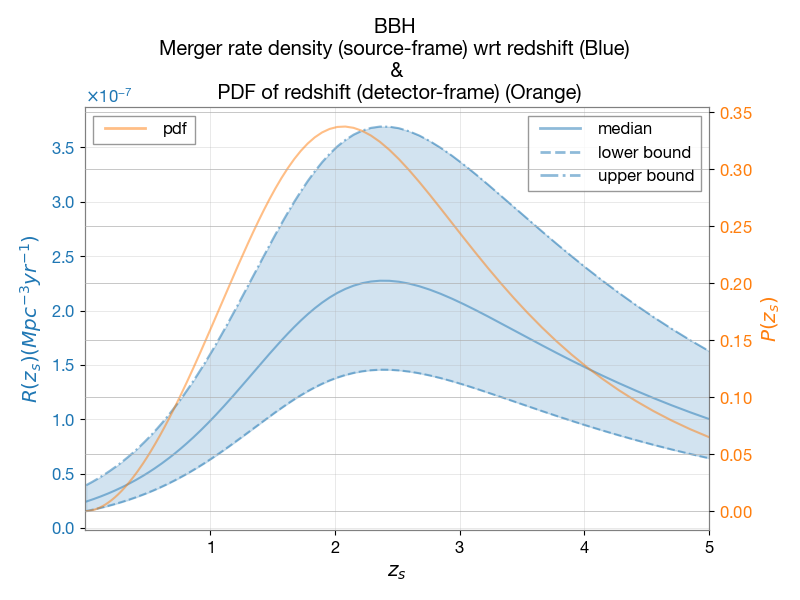

Welcome to ler’s documentation!

ler : LVK (LIGO-Virgo-KAGRA) Event (compact-binary mergers) Rate calculator and simulator
ler (/ˈɛlɚ/) is a statistical-based Python package whose core function is to calculate detectable rates of gravitational wave events (both lensed and unlensed). It provides a comprehensive framework for simulating compact binary coalescence events and their detection by ground-based gravitational wave detectors.
ler is closely integrated with the gwsnr package (see gwsnr documentation), which provides efficient gravitational-wave Signal-to-Noise Ratio calculation. This allows researchers to perform fast $P_{rm det}$ calculations for population studies and hierarchical Bayesian inference with selection effects.
For a detailed technical overview, see the Summary section, and browse the topics under CONTENTS in the sidebar (or top-left menu) of your browser.
Quick Start
Install the package using pip:
pip install ler
Then, calculate gravitational wave event rates:
from ler import LeR
# Initialize the rate calculator
ler = LeR()
# Generate unlensed and lensed event parameters
unlensed_param = ler.unlensed_cbc_statistics(size=1000)
lensed_param = ler.lensed_cbc_statistics(size=1000)
# Calculate detectable rates
unlensed_rate, unlensed_param_detected = ler.unlensed_rate()
lensed_rate, lensed_param_detected = ler.lensed_rate()
# compare rates
ratio = ler.rate_ratio()
Note
ler supports Python 3.10+ (but 3.11 recommended) and utilizes multi-core CPUs and multi-threaded CPUs when available. Refer to the Installation section for detailed setup instructions.
About the Project
Source Code: github.com/hemantaph/ler
Issue Tracker: Report an issue
Main Developer: Hemanta Ph.
Contributors: Anupreeta More, Harsh Narola, Ng Chung Yin (Leo), Justin Janquart, Chris Van Den Broeck, Otto Akseli Hannuksela, Neha Singh, David Keitel
Citation: If you use
lerin your research, please cite the ler paper.
Glossary
- Gravitational waves
Ripples in the fabric of spacetime, first predicted by Albert Einstein in his theory of General Relativity in 1916. They are created by some of the most violent and energetic events in the universe, such as the collision of black holes, the merging of neutron stars, or supernova explosions. These waves travel outward from their source at the speed of light, carrying information about their origins and the nature of gravity itself.
For a century, gravitational waves remained a theoretical prediction. It wasn’t until 2015 that the LIGO and Virgo collaborations made the first direct detection, an achievement that earned the 2017 Nobel Prize in Physics and opened an entirely new way of observing the cosmos.

Animation showing the propagation of gravitational waves from inspiraling binary black holes. As the waves travel, they stretch and squeeze spacetime in their path. Source: Jeffrey Bryant, Wolfram | Alpha, LLC..
- Lensing of gravitational waves
A process similar to the gravitational lensing of light, where gravitational waves emitted from distant astrophysical events are bent and split (strong-lensing case) into multiple images by the gravity of intervening massive objects, such as galaxies and galaxy clusters. This can magnify and change the arrival time of the gravitational waves.
Interactive animation showing the lensing of gravitational waves by a massive object.

Animation showing the bending of light by a massive object. Source: NASA, ESA, and Goddard Space Flight Center/K. Jackson..
- Rate calculation and statistics
In the context of astrophysics and gravitational wave science, rate calculation involves predicting the frequency of events such as compact-binary mergers based on observed data and theoretical models. Statistical methods are used to analyze and interpret the data, estimate parameters, and test hypotheses.
Figure showing the merger rate density of binary black hole (BBH) mergers as a function of redshift. Source: generated by the LeR package..
The
lerpackage efficiently computes detectable event rates for large-scale astrophysical simulations, supporting both lensed and unlensed gravitational wave events.
Contents:
- Installation
- Summary
- Code overview
- Gravitational wave event rates
- Analytical Formulation for Gravitational Wave Event Rates
- Analytical Formulation for Gravitational Wave Event Rates
- Lensed event rates
- Annual Rate of Detectable Lensed Gravitational Wave Events
- SNR Operator for Lensed Gravitational Wave Events
- Redshift distribution of lensed GW compact binary coalescences (CBC)
- Sampling Lens Properties
- Sampling of Source Position
- Calculation of Images properties
- Statistical Form of Detectable Merger Rate of lensed events (Monte Carlo Integration)
- Lensed event sampling (Analytical formulation)
API: